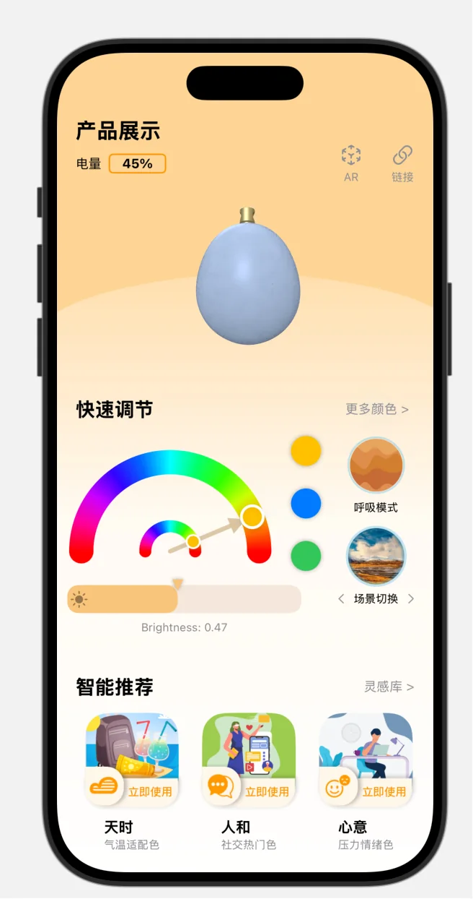
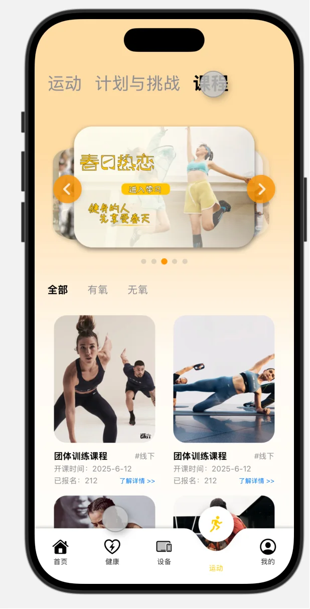
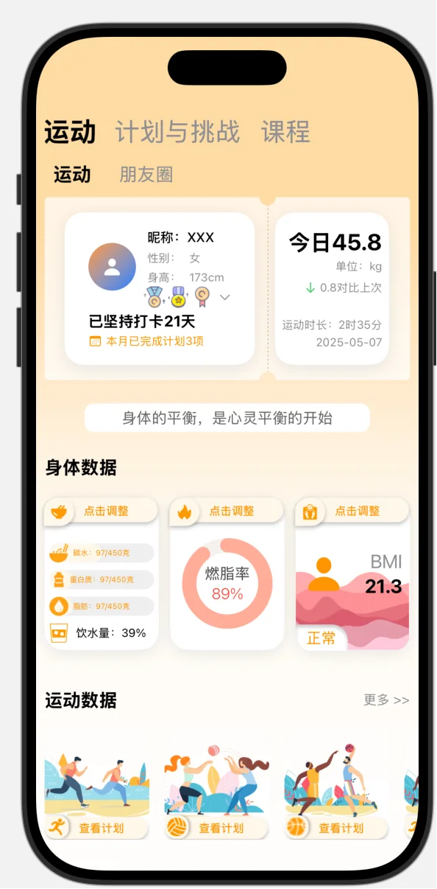

可实习 / 可到岗
GAO ZHIYI / 高志逸
懂产品的工程师，
能落地的产品人。
熟悉 LLM、RAG、Agent 的能力边界，能完成需求拆解、产品架构与 AI 工作流设计，也能使用 Python、LangGraph 独立推进原型、服务和 MVP 落地。
PRODUCT THINKING × ENGINEERING EXECUTION
我既能理解用户与业务，也能用代码把方案落地。从需求拆解、AI 工作流，到 Agent、RAG 与产品上线，我关注的是一件事：让 AI 真正解决问题。
从想法、方案到真实运行。
南开大学人工智能硕士在读，兼具 AI 工程实践与产品思维。我的优势不是停留在概念层，而是能把需求拆开、把系统搭起、把结果交付。
GAO ZHIYI / 高志逸
熟悉 LLM、RAG、Agent 的能力边界，能完成需求拆解、产品架构与 AI 工作流设计，也能使用 Python、LangGraph 独立推进原型、服务和 MVP 落地。
检索召回率与回答准确率提升
需求拆解技术方案初稿采纳率
500㎡复杂场景建图定位精度
机器人自主回充对接成功率
每个项目都覆盖了从问题定义、方案选择到工程落地的一段完整链路。
面向需要长期训练与饮食管理的健身用户，我从需求拆解、交互流程、AI 工作流到前后端实现独立完成产品闭环。产品将“问答工具”升级为持续陪伴的健身助手：既能记录饮食和运动、展示热量与训练数据，也能结合用户身体状态生成个性化训练和饮食计划。


围绕智能穿戴设备的真实使用链路，完成从蓝牙接入、健康指标展示到设备控制的 iOS 应用。项目既关注用户看到的健康数据与运动内容，也深入到底层通信协议和软硬件联调，让产品设计能够被稳定的工程能力支撑。



基于 Jetson Orin NX 与 APM 搭建移动机器人底盘的自主导航能力，在约 500㎡复杂室内场景中完成三维建图、定位、路径规划和实时避障。项目不仅解决算法“能跑”的问题，也围绕业务状态流、低电量处置与自主回充完成可持续运行设计。

针对团队文档分散、格式不统一、检索困难和经验难以复用的问题，设计并落地面向 Agent 的知识编译服务。系统把原始文档转化为结构化 Markdown 知识单元，再通过统一检索、治理接口和可分发 Skill，让知识能够被人检索，也能被 Agent 在任务执行中直接调用。
长文档拆解、清洗并生成可治理的 Markdown 知识单元。
元数据、对象文件与向量索引分层存储，统一召回。
通过 Skill 与 CLI 把知识接入任务规划、方案生成和经验回流。
在企业场景中做过知识系统、智能体工作流和机器人软件，关注的不只是功能完成，更包括问题定义、方案取舍与真实交付。
AI APPLICATION / KNOWLEDGE SYSTEM
AI 应用开发实习生
围绕团队知识沉淀与复杂需求拆解，参与产品方案设计，同时完成核心 AI 能力与工程链路落地。
相关能力已接入团队平台，并完成内部部署与实际使用验证。
ROBOTICS / SOFTWARE DELIVERY
机器人软件实习生
参与移动机器人底盘、无人机监测站和脑电信号软件开发，把复杂的软硬件能力组织成可运行、可调试、可交付的产品。
机器人底盘与无人机监测站完成交付；脑电信号监控软件曾出现在央视 CCTV13 新闻频道。
自动化本科训练建立了软硬件系统基础，人工智能硕士阶段进一步聚焦 LLM 应用、智能体与 AI 产品实践。
MASTER / ARTIFICIAL INTELLIGENCE
人工智能 · 硕士
聚焦人工智能与 LLM 应用方向，在学习期间持续通过 Agent、RAG 和 AI-native 工具完成真实产品实践。
BACHELOR / AUTOMATION
自动化 · 本科
系统学习控制、编程与软硬件协同，形成从数学建模到工程实现的问题解决基础。
不是把产品和开发分成两条线，而是用技术判断产品边界，用产品判断决定工程投入。
UNDERSTAND THE PROBLEM
从用户场景和业务痛点出发拆解需求，同时结合模型能力与风险，判断哪些问题真正适合用 AI 解决。
DESIGN THE INTELLIGENCE
把需求转化为产品架构、Agent 协作流程、RAG 检索与长期记忆方案，并通过评审和自检机制提升可靠性。
SHIP & ITERATE
使用 Python、FastAPI、LangGraph 或移动端技术完成 MVP，将数据、服务与终端连接起来，并在真实反馈中持续迭代。
AVAILABLE FOR AI OPPORTUNITIES